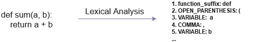
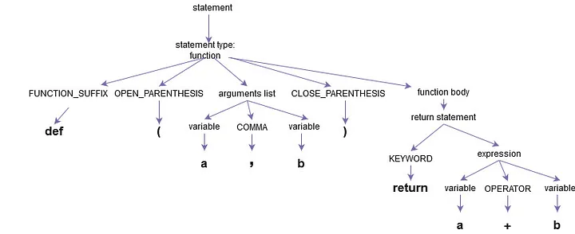
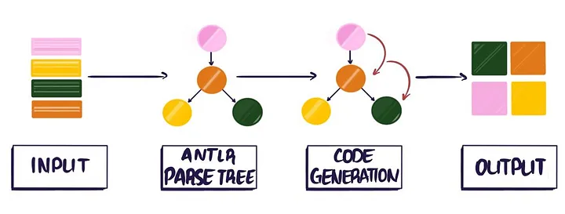
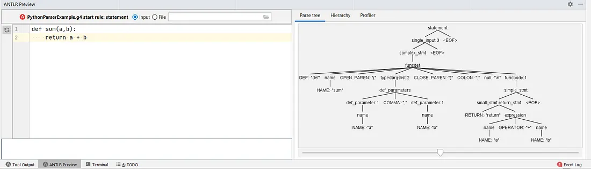
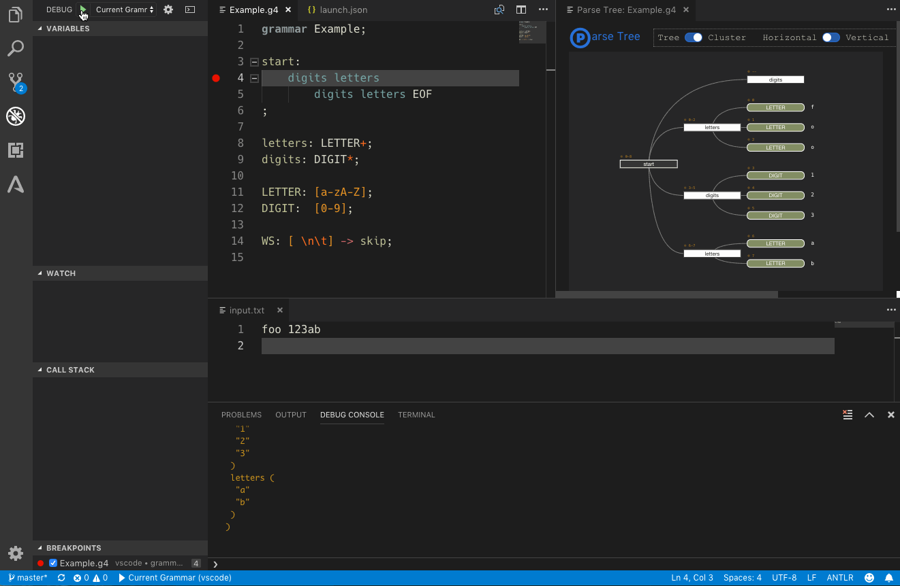
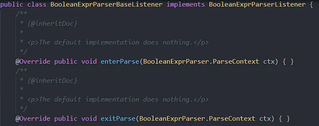
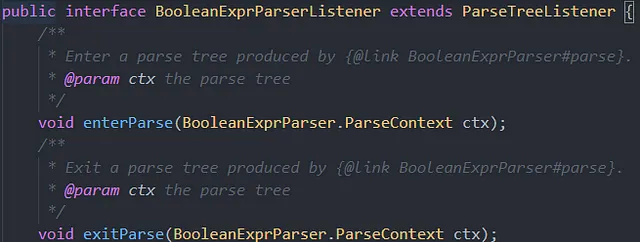
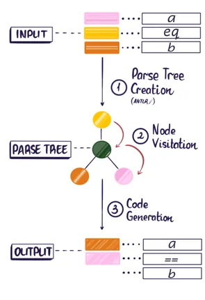

ANTLR 是 AN other T ool for L anguage R ecognition 的缩写，是一个功能强大的解析器生成器框架，用于从语法文件中构建语言识别器、编译器和翻译器，语法文件中包含从源语言到目标语言的每个语句所要执行的操作。
使用编译器设计的概念来定义每种现代编程语言的写作风格。这是一套典型的步骤，首先是 Lexical, Syntactical 和 Semantic Analysis，确定语言的基本编写方式，以便识别。接下来是一系列非常有趣的步骤：中间代码生成、优化和目标代码生成。
目前的版本为 4.7，它提供了一种方便的、对开发人员友好的方式来定义自己的规则集（又称语法），它由一系列标记和操作组成，这些标记和操作定义了语句在源语言中的书写方式，从而可以正确识别和解析语句。更有趣的是，它还能让用户对代码进行操作，并将其生成目标代码，所有这一切都可以用您选择的语言来实现。
那么，谁在使用 ANTLR 呢？
编程语言：Boo、Groovy、Mantra、Nemerle、XRuby 等。
其他工具、框架：Apache Spark、Hibernate、Intellij IDEA、Jazillian、JBoss Rules、Keynote(Apple)、WebLogic（Oracle）等。
The Basics#
1
2
def sum ( a , b ):
return a + b
考虑到上面 Python 的例子，这些编译器设计步骤从识别 Python 中编写的每条语句（源代码）的基本单元开始，并将其分解为 a stream of tokens，每个标记都被识别或映射为特定类型，也就是 Lexical Analysis。

Lexical Analysis of the python function yielding a stream of tokens
然后，根据这些标记出现的顺序来确定书面语句的上下文，并通过语义分析构建一棵树（或 A bstract S yntax T ree）来检查其正确性，同时提供使用现有树遍历方法之一进行遍历的能力。

Syntax tree after Semantic analysis
TLDR 概念#
Lexer : converts a stream of characters to a stream of tokens.Parser : processes of tokens, possibly creating AST.Abstract Syntax Tree(AST) : an intermediate tree representation of the parsed input that is simpler to process than the stream of tokens.Tree Parser : It processes an AST.String Template : a library that supports using templates with placeholders for outputting text (something very specific to ANTLR).
ANTLR 是一种 LL parser （Left-to-right, Leftmost derivation），是一种自顶向下的剖析器，适用于无上下文语言的子集。它从左到右解析输入，对句子进行 Leftmost derivation。它简化了许多步骤，使创建语言识别器和解析器变得更容易、更方便。

Syntax tree after Semantic analysis
Example1#
下面是我为解析 python 函数而编写的解析器的一个快速示例。
1
2
3
4
5
6
7
8
9
10
11
12
13
14
15
16
17
18
19
20
21
22
23
24
25
26
27
28
29
30
31
32
33
34
35
36
37
38
39
40
41
42
43
44
45
46
47
48
49
50
51
52
53
54
55
56
57
58
59
60
61
62
63
64
65
66
67
68
69
70
71
72
73
74
75
76
77
grammar PythonParserExample;
tokens { INDENT, DEDENT, LINE_BREAK }
statement
: (single_input)? EOF
;
single_input
: LINE_BREAK
| simple_stmt
| complex_stmt (LINE_BREAK)? EOF
;
complex_stmt: funcdef;
simple_stmt
: small_stmt (SEMI_COLON small_stmt)* SEMI_COLON? (LINE_BREAK)? EOF
;
stmt
: simple_stmt
| complex_stmt
;
funcdef
: ASYNC? DEF name OPEN_PAREN typedargslist? CLOSE_PAREN (ARROW name)? COLON '\n'? funcbody
;
typedargslist
: (def_parameters COMMA)? (args (COMMA def_parameters)? ) COMMA?
| def_parameters COMMA?
;
funcbody
: simple_stmt
| LINE_BREAK INDENT stmt+ DEDENT
;
args
: STAR name
;
def_parameters
: def_parameter (COMMA def_parameter)*
;
small_stmt
: RETURN expression #return_stmt
;
def_parameter
: name
| STAR
;
expression:
name op=OPERATOR name
;
name: NAME;
DEF : D E F;
SEMI_COLON : ';';
STAR : '*';
OPERATOR : STAR|'+'|'/'|'**'|'-';
RETURN : R E T U R N;
ASYNC : A S Y N C;
COMMA : ',';
OPEN_PAREN : '(';
CLOSE_PAREN : ')';
ARROW : '->';
COLON : ':';
NAME : ID_START ID_CONTINUE*;
WS : [ \t]+ {HandleSpaces();} -> channel(HIDDEN);
它的一个主要优点是，用户可以使用相同的 syntax 进行 lexing 和 parsing。然而，在语法层面上，这里的区别在于命名约定:
以大写字母开头的规则是 lexer rules
其他的都是 parse rules

ANTLR plugin (on Intellij IDEA) output for the above python function parsing
一旦定义完毕，complete ANLTR jar 文件就会提供一个选项，将其生成一组文件，并使用您喜欢的编程语言代码，也就是一个 parser。
1
java -Xmx500M -cp <path to ANTLR complete JAR> org.antlr.v4.Tool -Dlanguage= <target_language> PythonParserExample.g4
由于我使用 Python3 作为生成解析器的目标，ANTLR 的配置会生成 3 个 python 文件，这些文件可以作为代码翻译过程的一部分，用于将一种语言的源代码转换为另一种语言。
ANTLR plugin (on Intellij IDEA) output for the above python function parsing
Setting up an ANTLR Project#
ANTLR plugin for VSCode#
这里使用的设置将是在 VSCode 上创建的 Java-Maven 项目。
ANTLR plugin for VSCode 提供了各种选项（甚至比 Intellij 还多）来调试语法文件，并创建了美观的 parse trees，以便轻松调试用户输入语句的特定配置。

ANTLR plugin (on Intellij IDEA) output for the above python function parsing
要生成这些可视化效果，需要使用 vscode 的 ANTLR 启动配置在调试模式下运行语法文件，并为语法指定输入文件。下面是 VS Code 上 ANTLR 的 launch.json 配置文件：
1
2
3
4
5
6
7
8
9
10
{
"name" : "Debug ANTLR4 grammar" ,
"type" : "antlr-debug" ,
"request" : "launch" ,
"input" : "input.txt" ,
"grammar" : "BooleanExprParser.g4" ,
"startRule" : "parse" ,
"printParseTree" : true ,
"visualParseTree" : true
}
Grammar#
让我们先为解析器创建一个基本语法或 BooleanExpr.g4 文件。
1
2
3
4
grammar BooleanExpr ;
@ header {
package antlrsource ;
}
请注意 parser file 是如何以 grammar BooleanExpr; 开始的。这可以通过将 Lexer tokens (大写字母表示) 和 parser tokens (所有其他标记) 保存在两个不同的文件中来分解：
1
2
3
4
lexer grammar BooleanExprLexer ;
@ header {
package antlrsource ;
}
1
2
3
4
parser grammar BooleanExprParser ;
@ header {
package antlrsource ;
}
一个用于 parser，另一个用于 lexer，这样更便于维护。接下来，我们先定义一个头文件和软件包名称，放在生成的解析器类的开头。这将允许我们指定一个包，以便在 Java 代码中导入。
从 Lexer 开始，我们将 IDENTIFIER 定义为 lexer rule，并提供与之匹配的描述：
1
2
3
IDENTIFIER
: [a-zA-Z_] [a-zA-Z_0-9]*
;
Lexer rules 总是以大写字母开头。这些规则是 parser 的基本构件，重点是构建 parser rules 的基础。对正则表达式稍有接触的人来说，这应该有点熟悉。
这里，A-Z 表示 A 和 Z 之间的字母，而 a-z 表示 a 和 z 之间的字母。同样，0-9 表示数字 0 和 9 之间的数字。由于规则可能包含也可能不包含这些字母的多次出现，因此可以用 (*/+) 运算符作为后缀，表示这些字母出现的频率。这里，* 表示可能完全不出现（0 次或更多次）。这意味着，我们的 IDENTIFIER 规则将匹配大写字母、小写字母（总是以大写/小写字母开头）和整数字符的任意组合，但不匹配空字符。
一般来说，所有空白都会被词法识别器标记化。因此，您必须在解析器规则中定义空格以及所有可能使用空格的地方。不过，由于我们的源布尔表达式在某些地方不需要对空格敏感，因此我们可以编写一条词法规则来处理这个问题。
1
WS: [ \r\t\u000C\n]+ -> skip;
请注意留白标记的定义是如何编写的，以识别一个或多个空格、制表符和换行符，并让 ANTLR 跳过它们。箭头（->）运算符定义了遇到标记时要执行的操作（本例中为跳过操作）。接下来是为布尔表达式定义标记，其中包括多个运算符和操作数。这包括以下标记：
1
2
3
4
5
6
7
8
9
10
11
12
13
AND: A N D;
OR: O R;
NOT: N O T;
TRUE: 'True';
FALSE: 'False';
GT: G T {setText(" > ");};
GE: G E {setText(" >= ");};
LT: L T {setText(" < ");};
LE: L E {setText(" <= ");};
EQ: E Q {setText(" == ");};
LPARENTHESIS: '(';
RPARENTHESIS: ')';
DECIMAL_NUMBER: '-'? [0-9]+ ( '.' [0-9]+)?;
Embedding Actions#
规则 GT、GE、LT、LE 和 EQ 包含代码块，允许它们在遇到各自的标记时执行某些动作。这样就可以在语法文件中定义某些动作，但需要注意的是，只能定义简单的小动作，而不能定义复杂的代码块。
如果我们不希望产生构建解析树的开销，我们可以在解析过程中即时计算值或打印内容。另一方面，这意味着要在表达式语法中嵌入任意代码，这就比较困难；我们必须了解这些操作对解析器的影响，以及这些操作的位置。
The Definitive ANTLR 4 Reference
请注意，每条规则都由用空格隔开的字母组成。这些被称为 fragments。它们的主要目的是减少每个标记的杂乱定义，这基本上需要处理对大小写敏感的用例。这样，用户就不必为识别同一个 token 而写下所有可能的文本组合。其定义如下
1
2
3
4
fragment A : [aA]; // match either an 'a' or 'A'
fragment B : [bB];
...
fragment Z : [zZ];
虽然大多数字母数字令牌都可以通过使用片段来创建，但其他令牌则可以通过自定义正则表达式定义或使用引号括起来的纯字符串（如 LPARENTHESIS 和 DECIMAL_NUMBER）来创建。
而 parser rules（所有其他规则）则以小写字母开头。这些规则的主要目的是在 DSL 中定义布尔表达式的上下文，并帮助从生成的词法标记中构建解析树或抽象语法树。
Basic Building Blocks#
让我们开始定义规则。首先，我们定义根节点（或通常所说的解析节点），它本身只能指向一条规则（此处为 basicBooleanExpression）。首先是一个返回语句，其中包含它应该返回的变量（可选，但在我们的例子中是必需的）及其返回类型。
这条规则指向另一条名为 basicBooleanExpression 的规则，该规则后跟有 EOF（或文件结束）字符。不包含该字符实质上意味着您正试图解析整个输入内容，而只解析部分输入内容是可以接受的，这将避免任何语法错误。
1
2
3
4
parse
returns[String str]
@init {$str="";}:
basicBooleanExpression {$str=$basicBooleanExpression.str;} EOF;
使用 EOF character 的原因是，如果在解析 basicbooleanExpression 规则时出现语法错误，那么解析规则将尝试恢复语法错误并报告收集到的语法错误，然后继续解析，因为 EOF 是完成规则所必需的，而且解析器尚未到达 EOF。
由于我们已经定义了语法并将其分成了两个独立的文件，因此我们可以选择在解析器文件中将词法作为定义规则的词汇:
1
2
3
options {
tokenVocab = BooleanExprLexer;
}
回到我们的解析器，
第一条规则或 basicBooleanExpresion 规则定义了三个选项，在我们的 python 目标代码评估中应始终返回一个布尔值。第一种是后两种规则的组合，即两个布尔表达式与一个逻辑和/或运算符的组合；
第二种是另一种三元表达式，即使用比较器（如、小于或 LT）比较两个基本表达式彼此返回的某个值；
最后，第三种是单元表达式（只有一个布尔值，如 True 或 False）。
这些规则由运算符 | 分隔。这意味着，basicBooleanExpression 在识别输入字符串时，可以根据从左到右的文本识别，递归地引用其子规则中的任一规则。
1
2
3
4
5
basicBooleanExpression
returns[String str]:
left = basicBooleanExpression op = logicalOperator right = basicBooleanExpression {$str=$left.str +" "+$op.text+" "+$right.str;} # logicalExpression
| left = expression op = comparator right = expression {$str="("+$left.text +" "+$op.text+" "+$right.text+")";} # comparisonExpression
| bool {$str=$bool.str;} # booleanExpression;
basicBooleanExpression 中的每条规则都分配给一个变量名，如 left、right（表达式中的左右操作数）和 op（操作数的缩写），或者是一条单标记规则。$str 变量用于分配当前表达式解析的结果，并使用规则开头的 [String str] 返回值返回。
# 用于标记每条规则，使其在目标语言解析器（在我们的例子中是 Java 解析器类）中有专门的监听器方法。
1
2
3
4
5
6
7
8
9
10
11
12
13
14
15
16
17
18
19
20
21
22
23
24
25
26
27
28
29
30
31
32
33
34
35
36
37
38
39
40
41
42
43
44
45
46
lexer grammar BooleanExprLexer ;
@ header {
package antlrsource ;
}
AND : A N D ;
OR : O R ;
NOT : N O T ;
TRUE : ' True ' ;
FALSE : ' False ' ;
GT : G T { setText ( " > " );};
GE : G E { setText ( " >= " );};
LT : L T { setText ( " < " );};
LE : L E { setText ( " <= " );};
EQ : E Q { setText ( " == " );};
LPARENTHESIS : '(' ;
RPARENTHESIS : ')' ;
DECIMAL_NUMBER : '-' ? [ 0 - 9 ] + ( '.' [ 0 - 9 ] + ) ? ;
IDENTIFIER : [ a - zA - Z_ ] [ a - zA - Z_0 - 9 ] * ;
WS : [ \ r \ t \ u000C \ n ] + - > skip ;
fragment A : [ aA ]; // match either an 'a' or 'A'
fragment B : [ bB ];
fragment C : [ cC ];
fragment D : [ dD ];
fragment E : [ eE ];
fragment F : [ fF ];
fragment G : [ gG ];
fragment H : [ hH ];
fragment I : [ iI ];
fragment J : [ jJ ];
fragment K : [ kK ];
fragment L : [ lL ];
fragment M : [ mM ];
fragment N : [ nN ];
fragment O : [ oO ];
fragment P : [ pP ];
fragment Q : [ qQ ];
fragment R : [ rR ];
fragment S : [ sS ];
fragment T : [ tT ];
fragment U : [ uU ];
fragment V : [ vV ];
fragment W : [ wW ];
fragment X : [ xX ];
fragment Y : [ yY ];
fragment Z : [ zZ ];
BooleanExprLexer.g4
1
2
3
4
5
6
7
8
9
10
11
12
13
14
15
16
17
18
19
20
21
22
23
24
25
26
27
28
29
30
31
32
33
34
35
parser grammar BooleanExprParser ;
@ header {
package antlrsource ;
}
options {
tokenVocab = BooleanExprLexer ;
}
parse
returns [ String str ]
@ init { $ str = "" ;}: basicBooleanExpression { $ str = $ basicBooleanExpression . str ;} EOF ;
basicBooleanExpression
returns [ String str ]:
left = basicBooleanExpression op = logicalOperator right = basicBooleanExpression { $ str = $ left . str + " " + $ op . text + " " + $ right . str ;} # logicalExpression
| left = expression op = comparator right = expression { $ str = "(" + $ left . text + " " + $ op . text + " " + $ right . text + ")" ;} # comparisonExpression
| bool { $ str = $ bool . str ;} # booleanExpression ;
expression
returns [ String str ]:
LPARENTHESIS expression RPARENTHESIS # parenthesisExpression
| NOT expression # notExpression
| bool # unaryboolExpression
| IDENTIFIER # identifierExpression
| DECIMAL_NUMBER # decimalExpression
;
comparator
returns [ String str ]: GT | GE | LT | LE | EQ ;
logicalOperator
returns [ String str ]: AND | OR ;
bool
returns [ String str ]: TRUE | FALSE ;
BooleanExprParser.g4
1
2
a gt b and c gt d
a eq b
input demo
Maven Configuration#
现在，让我们继续生成解析器文件。这次，我将使用 maven 配置和 VS Code 的 ANTLR 插件来生成这些文件：
1
2
3
4
5
6
7
8
9
10
11
12
13
14
15
16
17
18
19
20
<plugin>
<groupId> org.antlr</groupId>
<artifactId> antlr4-maven-plugin</artifactId>
<version> 4.8-1</version>
<executions>
<execution>
<id> antlr</id>
<phase> package</phase>
<configuration>
<libDirectory> ${basedir}/src/main/antlr</libDirectory>
<sourceDirectory> ${basedir}/src/main/antlr</sourceDirectory><outputDirectory> ${basedir}/src/main/java/antlrsource</outputDirectory>
<visitor> false</visitor>
<listener> true</listener>
</configuration>
<goals>
<goal> antlr4</goal>
</goals>
</execution>
</executions>
</plugin>
每个标签都定义了 ANTLR 在生成解析器类时应使用的目录或需要或不需要生成的文件。例如，监听器和访问者标签的定义都是为了根据它们的布尔值生成相应的 java classes/interfaces。
The set of target language parser files
Traversal Patterns#
让我们深入了解 Listener vs Visitor traversal patterns ，并探索 BooleanExprParserBaseListener class 的功能。
ANTLR4 提供了两种遍历语法树的方法：
Listener(default)：listener pattern 是一种事件驱动方法，用于遍历每个解析器规则类型的语法树。为每个解析器规则提供一个包含进入和退出事件方法的接口。
Visitor：这使得用户也可以控制解析树的遍历。解析树中的节点（解析器规则）将使用提供的访问方法明确遍历或访问。
根据使用环境的不同，Listener 和 Visitor 模式各有利弊。
相同点
两种实现方式的规则语法规则完全相同。
两种实现方式的解析器输出也完全相同。
不同点
由于 Listener pattern 依赖于用户来定义其遍历序列，因此它使用调用堆栈来管理这些遍历，这意味着大量输入可能会导致溢出，而在已分配堆上使用堆栈的监听器则不会出现这种问题。
Listener pattern 和 Visitor pattern 的最大区别在于，监听器方法是由 ANTLR 提供的行走器对象独立调用的，而访问者方法必须通过显式访问调用来行走其子节点。如果忘记在节点的子节点上调用访问者方法，就意味着这些子树不会被访问。
跳回到我们生成的 Listener

Listener Implementation

Listener Interface
接口类的实现只针对某些语言，一般来说，implementing class/module 是在目标语言中定义的。请注意，interface 和 implementation 中都定义了根（或解析）节点监听器方法。所有方法都有相应的上下文对象，该对象由生成的解析器类提供。这样就可以在遍历解析树时对该规则的上下文进行操作。
让我们创建与解析器的第一次 interaction ，并生成一个简单表达式的输出：
1
2
3
4
5
6
7
8
9
10
11
12
13
14
15
16
17
18
19
20
21
22
// Creates a lexer for the input string to generate the tokens
BooleanExprLexer lexer = new BooleanExprLexer ( CharStreams . fromString ( "a eq b" ));
// Stores the tokens generated by the lexer for the input string
CommonTokenStream tokens = new CommonTokenStream ( lexer );
/**
Creates a parser for generation of an Abstract Syntax tree from
the stream of tokens to identify context
*/
BooleanExprParser parser = new BooleanExprParser ( tokens );
/**
Creates a parse tree for generating the output string and
manipulation of the parser and lexer tokens in the parse tree.
The tree is create considering the parse rule in the grammar
as the root node. This tree will be used later for listener.
*/
ParseTree tree = parser . parse ();
/**
Convert the root node's output to it's rule context and use
its attribute for printing the parser's output string.
*/
ParseContext context = ( ParseContext ) tree ;
System . out . println ( context . str );
由于我们已经在语法文件中添加了将基本运算符转换为 python 对应运算符的操作，因此解析器的输出表达式已经是解析形式。例如，一个简单的比较表达式，如 a eq b，将转换为 python 表达式 a == b 。
现在，我们已经转换了表达式，可以使用监听器文件中的某些更改将其转换为函数，并使用 template 将该表达式替换为 placeholder function text，用于多个类似表达式：
1
2
def < function_name > ( < list_of_parameters > ):
return a == b
parsed expression 可以很容易地替换成上面的表达式。不用担心替换部分，我们稍后会讲到。现在，为了从每个表达式中提取参数列表，我们将添加一个列表，以便在每次触发标识符类型（解析器规则）的输入事件监听器方法时捕获每个标识符名称。
让我们定义一个字符串列表作为实例变量，在无参数构造函数中对其进行初始化，定义其 getter 方法，并添加一个方法来清除该列表，以便每次表达式解析和替换完成后都能清除该列表。
1
2
3
4
5
6
public class BooleanExprParserBaseListener implements BooleanExprParserListener {
private List < String > identifiersList ;
public BooleanExprParserBaseListener (){
identifiersList = new ArrayList <> ();
}
...
让我们把上下文 getText 方法中的标识符名称添加到我们为 identifierExpression 每次触发输入事件时创建的列表中：
1
2
3
4
5
6
7
8
9
public void clearIdentifiers () {
identifiersList . clear ();
}
public List < String > getIdentifiersList () {
return identifiersList ;
}
@Override public void enterIdentifierExpression ( BooleanExprParser . IdentifierExpressionContext ctx ) {
identifiersList . add ( ctx . getText ());
}
最后，我们需要在树上遍历，以触发这些事件，从而收集表达式的所有参数。ANTLR 为此提供了 ParseTreeWalker 类。顾名思义，该类允许在走过解析树时同时使用监听器和访问者实现类。让我们使用监听器来遍历上面定义的解析树：
1
2
3
4
5
BooleanExprParserBaseListener booleanExprBaseListener = new BooleanExprParserBaseListener ();
ParseTreeWalker walker = new ParseTreeWalker ();
walker . walk ( booleanExprBaseListener , tree );
List < String > identifiers = booleanExprBaseListener . getIdentifiersList ();
booleanExprBaseListener . clearIdentifiers ();
请注意，这里的 walk 方法使用 listener 来监听在解析树上行走时触发的事件。接下来，我们使用 getter 方法获取解析表达式时获取的所有标识符名称列表。
Generate Code#

A gist of what the process looks like so far
将使用上一部分 generated expression 或 the output of intermediate code generation，并将其替换为模板组文件(templating engine 使用的东西)，这样我们就可以将渲染的函数串写入 python 文件。
templating engine 将以我们的目标语言（即 Python）生成实际可用的代码，从而实现代码生成的目标。
提到 templating engine ，你首先想到的就是 web frameworks。几乎所有的现代 web frameworks 都有一个共同的目标，那就是使用模板引擎生成动态的、业务就绪的网页。每个模板引擎的最终目标都是将获取的输出结果替换为模板文件，以便即时显示给最终用户。
templating engines compared side-by-side
StringTemplate#
我将使用一个名为 StringTemplate 的类似模板引擎。它被广泛用于网页模板化，但也支持用于创建目标语言代码文件的基本模板操作。
<attribute> 如果存在，则求值为属性的字符串值，否则为空字符串。
例如，在使用 Java 中的 StringTemplate 对象时，<expression> 将以 key expression 表示。因此，如果用户在 expression 键上输入任何值，它就会在模板中被称为 expression 属性。
对于模板内的自定义或用户定义对象，请使用 <attribute.property> ，将属性作为属性查找，然后使用 getProperty() 或 isProperty() 或 hasProperty() 等访问器方法。
<attribute:t1(argument-list)：... :tN(argument-list)> 迭代同一个模板替换的对象列表。从左到右依次应用多个模板。在多值属性上应用模板的结果是另一个多值属性。整个表达式的求值结果是所有模板元素的连接结果<! comment !> StringTemplate 会忽略已定义的注释。模板定义看起来就像带有未键入参数的函数定义：
templateName(arg1, arg2, ..., argN) ::= "single-line template"templateName(arg1, arg2, ..., argN) ::= <<multi-line template>>templateName(arg1, arg2, ..., argN) ::= <%multi-line template that ignores indentation and newlines%>
下面我们来看看 Python StringTemplateExample.stg 文件的示例：
1
2
3
4
5
6
7
<! StringTemplateExample.stg !>
templateExample(functions) ::= <<
<functions :{function |
def <function.function_name>(<function.params_list>)
return <function.expression>
}>
>>
请注意，为了保持缩进和两行间隙，我使用了上面基础示例中的第二种模板类型，因为这需要遵循 Python PEP8 的规则，即在 Python 方法之间有两行间隙。下面我们来看看该模板在 Java 中的用法：
1
2
3
4
5
6
7
8
9
10
11
12
13
14
15
16
17
18
19
20
21
22
23
24
25
26
27
List < String > lines = reader . lines (). collect ( Collectors . toList ());
String functionName = "generated_function_%1$s" ;
List < Map > functions = new ArrayList <> ();
Map < String , String > function ;
for ( int i = 0 ; i < lines . size (); i ++ ) {
BooleanExprLexer lexer = new BooleanExprLexer ( CharStreams . fromString ( lines . get ( i )));
CommonTokenStream tokens = new CommonTokenStream ( lexer );
BooleanExprParser parser = new BooleanExprParser ( tokens );
ParseTree tree = parser . parse ();
ParseContext context = ( ParseContext ) tree ;
System . out . println ( context . str );
BooleanExprParserBaseListener booleanExprBaseListener = new BooleanExprParserBaseListener ();
ParseTreeWalker walker = new ParseTreeWalker ();
walker . walk ( booleanExprBaseListener , tree );
List < String > identifiers = booleanExprBaseListener . getIdentifiersList ();
function = new HashMap <> ();
function . put ( "function_name" , String . format ( functionName , i ));
function . put ( "expression" , context . str );
function . put ( "params_list" , identifiers . stream (). collect ( Collectors . joining ( ", " )));
functions . add ( function );
booleanExprBaseListener . clearIdentifiers ();
}
stringTemplateExample . add ( "functions" , functions );
System . out . println ( stringTemplateExample . render ());
INPUT
1
2
a gt b and c gt d
a eq b
Output
1
2
3
4
5
def generated_function_0 ( a , b , c , d )
return ( a > b ) and ( c > d )
def generated_function_1 ( a , b )
return ( a == b )
Resources#